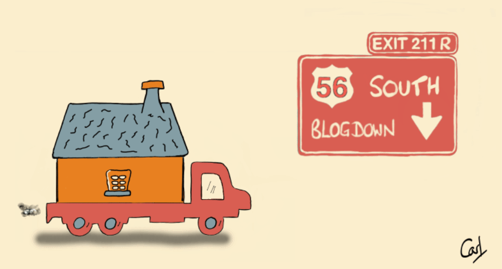

Moving House

After reading up on Blogdown, I decided to take the plunge and leave Wordpress for a quieter life in Blogdown.
Motivation
My former site looked pretty good. But it was expensive to maintain.
I was spending more than I wished to get a performant site. I could have spent less, and perhaps I’m easily seduced by “bells & whistles”, e.g. CloudFlare Plus and “GoGeek” hosting. But a non-speedy site is a bit of a turn-off.
And it wasn’t just cost. It also took a lot of non-R effort to publish a post with Rmarkdown in the way I wanted. My main interest is in writing R code. Not wrestling Wordpress and multiple plugins into submission.
A reboot was also a chance to re-brand. When I originally set up thinkr.biz I was initially unaware of a similarly-named site in France. Although my personal blog posed no threat across the Channel, and we co-existed for a few years, I anyway prefer having something a little more unique.
Why Blogdown?
I like Yihui Xie’s Blogdown primarily because it simplifies the path from Rmarkdown to blog. No more WWE-style detour. I can tweak a line of code in Rmarkdown, serve_site, and immediately see the updated blog locally. When I’m ready to publish, I just drag the public folder into Netlify, and voilà it’s live.
My personal roadmap
There are different routes one can take. Here’s mine.
Choose a theme
In his book, Yihui advises asking yourself: “Do I like this fancy theme so much that I will definitely not change it in the next couple of years?” It’s very sound advice. Nonetheless, I’m easily seduced, so explored all possible fancy themes. In part because I like creating my own graphic art, so I wanted something that could help these little creations shine.
Oddly, I started by looking at one of Yihui’s recommended themes and discarded it, only to return to it again much later after an exhaustive exploration of other themes. There are many superficially nice Hugo themes. But when you actually play with them, there’s little below the surface and/or an absence of serious upkeep.
Hugo Academic is not the most appealing in the “shop window”. But when you take it for a test spin, and really take it through its paces, it offers a richness, flexibility and investment that reeled me in. After customising it to my taste, and paring back optional bits I do not need, simply by switching them off, it gave me something I feel very happy with.
Migrate
There are assisted migration paths, e.g. from Wordpress, discussed in the Blogdown book. However I wanted to review and upgrade the R code in my original posts (only a dozen or so at the time). So, one-by-one, I copied each Rmd file into the projects folder of my new site, tweaked the code, and used serve_site to see the end product.
I took this approach because R, especially the tidyverse and its ecosystem, is rapidly evolving. For example, the latest release of dplyr has some great new column-wise and row-wise functions. And spread and gather have been superseded by the more capable pivot_wider and pivot_longer. So it was a chance to upgrade my code.
For one or two of the more processing-intensive projects, I used either cache = TRUE in the code chunk, or saveRDS and readRDS to load data prepared earlier.
Build
An option I haven’t yet pursued is to host all my website source files in a GIT repository. Then Netlify could call Hugo to render my website automatically. Right now, my site content is simple enough to be able to use the Build Website button in RStudio.
The web-site is a static build, so it’s fast out-of-the-box, i.e. no need for speed-inducing wallet-slimming plugins.
Deploy
Netlify is recommended by bookdown.org. And it’s free for personal projects. The only small annual cost is my domain name.
Choosing a domain name, which one can do via Netflify, is a little tricky. Many of the ideas one might have, have already occurred to someone else. And when you do find something available, there’s always that niggling feeling there may be something better out there.
I chose Quantum Jitter for several reasons:
- I often use ggplot2’s
geom_jitter - Like a Quant, I have an interest in using machine learning to assess stock fundamentals
- Like the quantum world, my work features statistics and randomness
- It was available
After running the build in RStudio, which for my site only takes a few minutes, I can simply drag my newly-created public folder into Netlify’s Deploys page and bingo, the site’s live in a jiffy.
So, if you are toying with the idea of moving house, I can recommend a quieter life in Blogdown.